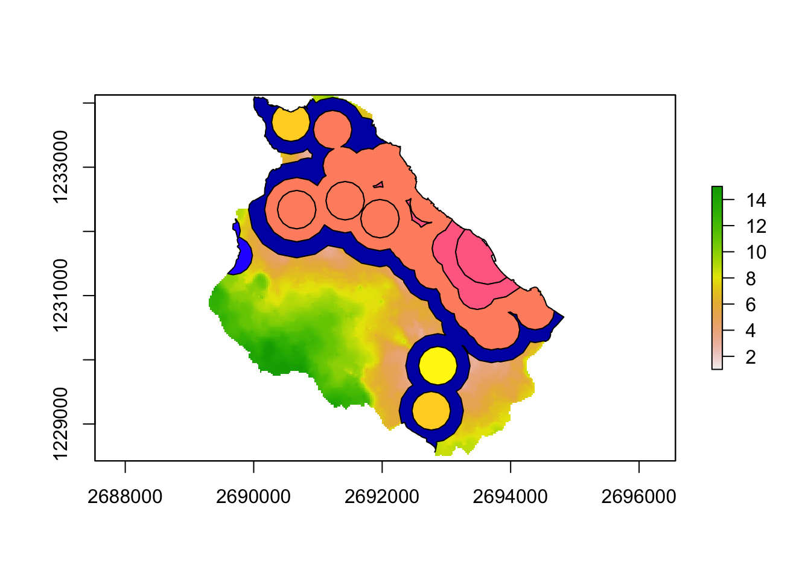

8.1 Clip
Quite often in spatial analysis, we come across with cases, where we do not want to use all the available data there is. In other words, we want to focus on a specific area of interest, which dictates the need for clipping the existing dataset based on it’s relationship to some other existing spatial feature. In R this operation can be easily performed using the st_intersection function in sf.
Let’s assume in the example below that we want to clip the available dataset of all the train stations in Switzerland by focusing our analysis on four specific cantons.
library(sf)
# Point dataset depicting the train stations locations across Switzerland
bahn_haltestelle_ch <- st_read("sample_data/other/Haltestelle_Bahn_CH.shp")## Reading layer `Haltestelle_Bahn_CH' from data source `/Users/runner/work/book/book/sample_data/other/Haltestelle_Bahn_CH.shp' using driver `ESRI Shapefile'
## Simple feature collection with 3134 features and 16 fields
## geometry type: POINT
## dimension: XYZ
## bbox: xmin: 2488908 ymin: 1076850 xmax: 2817389 ymax: 1289090
## z_range: zmin: 194.905 zmax: 3453.525
## projected CRS: CH1903+ / LV95# Dataset depicting Switzerland on canton level
kantonsgebiet <- st_read("sample_data/other/Kantonsgebiet.shp")## Reading layer `Kantonsgebiet' from data source `/Users/runner/work/book/book/sample_data/other/Kantonsgebiet.shp' using driver `ESRI Shapefile'
## Simple feature collection with 56 features and 22 fields
## geometry type: MULTIPOLYGON
## dimension: XYZ
## bbox: xmin: 2485410 ymin: 1075268 xmax: 2833858 ymax: 1295934
## z_range: zmin: 193.51 zmax: 4613.729
## projected CRS: CH1903+ / LV95tmap_mode(mode = c("plot")) # setting the plotting mode to static -- optimizing the process
tm_shape(kantonsgebiet) + tm_polygons("#f0f0f0") +
tm_shape(bahn_haltestelle_ch) + tm_dots(col = "#e34a33",size = 0.1, alpha = 0.5) +
tm_shape(kantonsgebiet) + tm_borders(col = "black") + tm_layout(frame = F)
As it was mentioned above, the aim is to analyse the situation at a particular area. So we are going to create an index with the specific cantons we are interested in.
index <- kantonsgebiet$name == "Zürich" |
kantonsgebiet$name == "St. Gallen" |
kantonsgebiet$name == "Thurgau" |
kantonsgebiet$name == "Aargau"
# Selecting the cantons based on the previously generated index
kantons_aOi <- kantonsgebiet[index,]
# Performing the clipping operation
hal_clipped <- st_intersection(kantons_aOi,bahn_haltestelle_ch)- Plotting the result from the clipping operation
tm_shape(kantons_aOi) + tm_polygons("#f0f0f0") +
tm_shape(hal_clipped) + tm_dots(col = "#e34a33",size = 0.1, alpha = 0.5) +
tm_shape(kantons_aOi) + tm_borders() + tm_layout(frame = F)
So, ultimately, as we can see above, the st_intersection function creates a result where the point dataset is precisely “clipped” based on the area of interest
The operation above produces the same outcome as the one depicted in the figure below ??.
Figure 8.1: Clip operation in ArcGIS pro